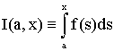
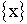
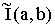
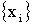
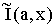
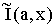

или .
Основная цель. Освоить один из простейших методов численного интегрирования: квадратурную формулу трапеций, а также основанные на этой формуле метод экстраполяции Ричардсона и адаптивный метод.
Теория и алгоритмы. Для выполнения лабораторной работы необходимо познакомиться со следующими разделами темы «IV.ЧИСЛЕННОЕ ИНТЕГРИРОВАНИЕ»:
Квадратурные формулы составного типа. Формула трапеций.
Экстраполяция Ричардсона.
Вычисление интеграла методом Ромберга.
Адаптивный метод вычисления интеграла.
А также изучить содержащиеся в этих разделах Алгоритмы IV.1-IV.5.
Тестовые задачи. В данной лабораторной работе предполагается вычисление определенных интегралов одного из следующих видов:
Интегралы второго вида рассматриваются как функции переменного «x», в задачах будет указано множество , на котором эти интегралы требуется вычислить.
Интегралы 1-6 являются «табличными», их можно найти в [1]:
Далее следуют интегралы, которые могут быть вычислены с использованием специальных технических приемов, таких как замена переменной, интегрирование по частям, интегрирование рациональных выражений и т.д. (см. [1]):

Несколько интегралов, которые не вычисляются в элементарных функциях (см. [1]):
Требования к программе. Программа должна включать:
набор тестовых задач (по заданию преподавателя);
вычисление интегралов должно производится с использованием двух различных методов:
методом Ромберга (используйте один из алгоритмов IV.2-IV.4, по вашему усмотрению, или предложите свой алгоритм, реализующий метод Ромберга);
адаптивным методом (алгоритм IV.5, либо авторский вариант);
вывод погрешности интегрирования Err(I):
для интегралов первого вида - это величина
 ),
),где  - вычисленное значение интеграла;
для интегралов второго вида - это величина
где  - множество узлов сетки из  , на которой производится вычисление интеграла;
, на которой производится вычисление интеграла;
графику:
при вычислении интегралов первого вида должны отрисовываться узлы (последней) квадратурной сетки и две криволинейные трапеции: "точная" -построенная по аналитически-заданной подинтегральной функции и "приближенная" - кучочно-линейный интерполянт, построенный на вышеуказанной сетке.
при вычислении интегралов второго вида желательна отрисовка двух вариантов графика:
одновременная отрисовка графиков функций I(a,x) и  на множестве
на множестве  - где они определены, причем  рисуется как
кусочно-линейный интерполянт на сетке
- где они определены, причем  рисуется как
кусочно-линейный интерполянт на сетке  , на которой он вычислялся (график обязателен),
, на которой он вычислялся (график обязателен),
график а) на отрезке [a; max{x}] (график желателен).
Задание для работы с программой. Провести численные расчеты, используя все задействованные в программе тестовые задачи и оба метода. Попытаться выполнить сопоставительный анализ метода Ромберга и адаптивного метода. Критерии сравнения методов выбрать самомтоятельно (это могут быть: число узлов используемой сетки, необходимое для достижения заданной точности, число необходимых операций алгоритма, время расчета и т.д.). Отметить, есть ли различия между задаваемой и достигнутой погрешностями в обоих методах.
Фихтенгольц Г.М. Курс дифференциального и интегрального исчисления, том II. Москва «Наука», 1970, -800 с.